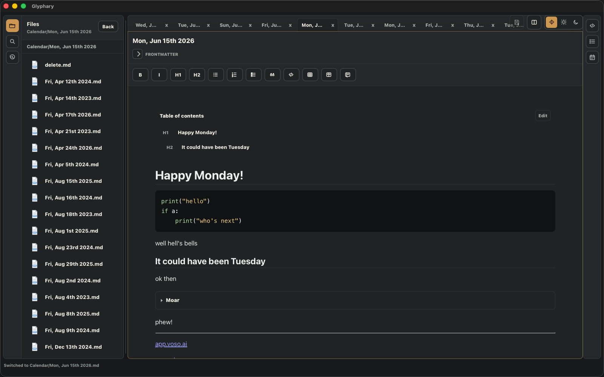
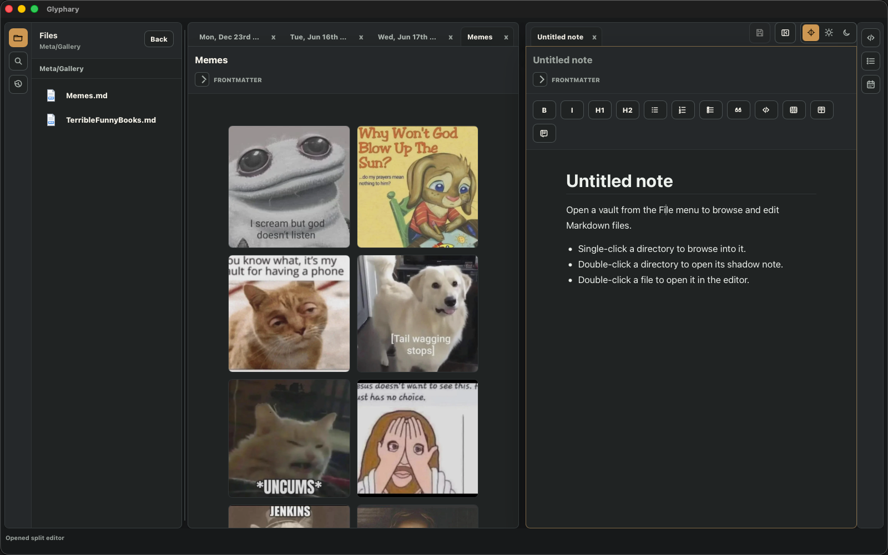
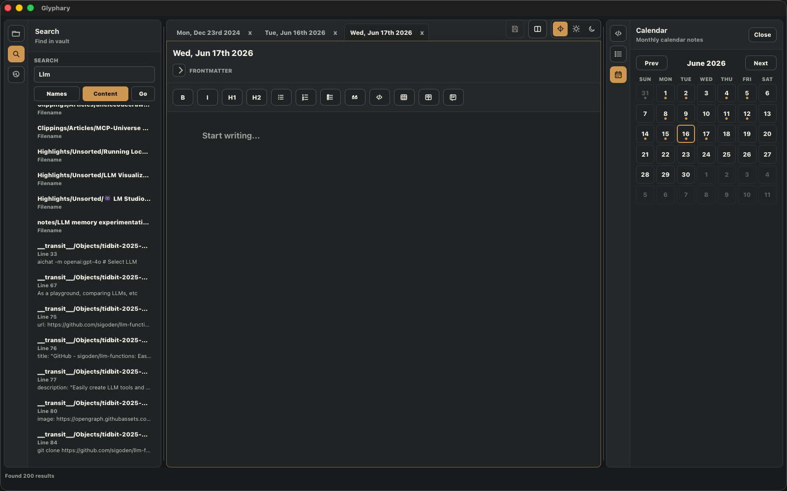
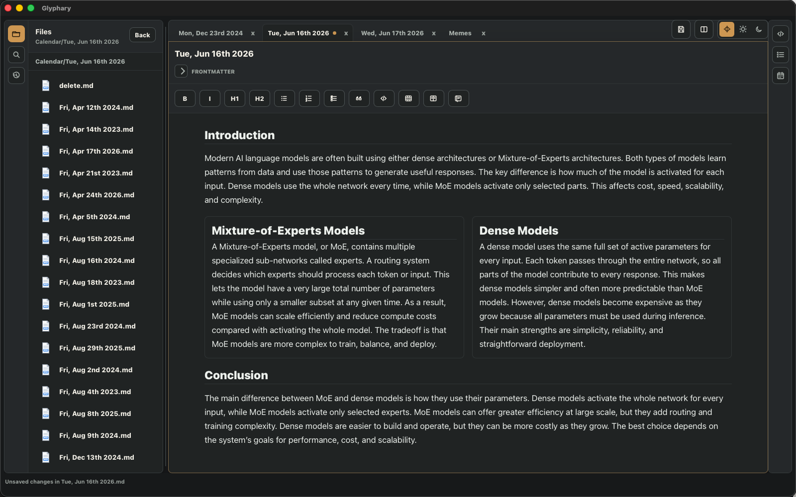
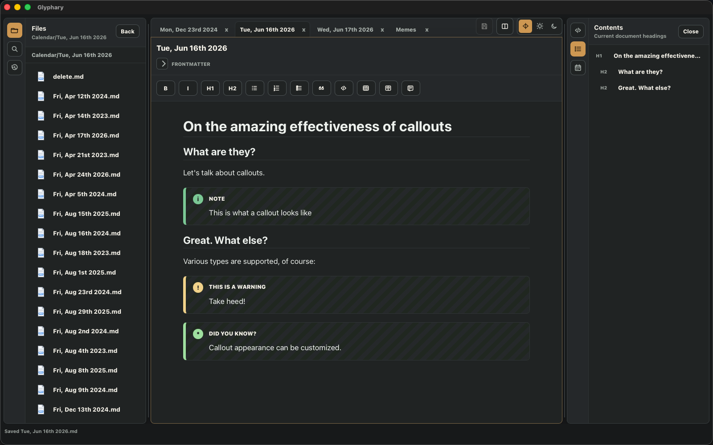
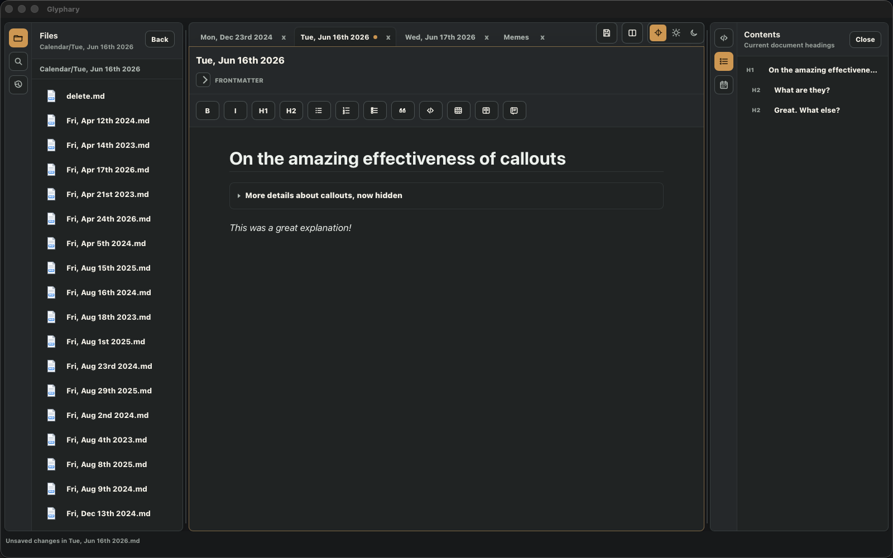
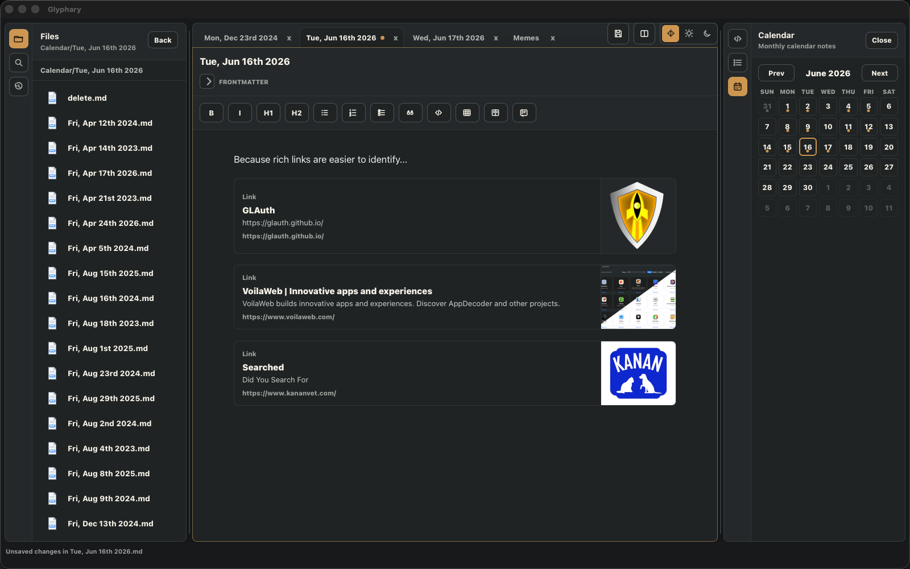

Five-minute path
- Open Glyphary.
- Choose File -> Open Vault... and select a folder of Markdown files.
- Double-click a file in the left drawer.
- Type in the editor, then press Cmd+S.
- Press Cmd+P and run Insert callout.
Start here
This manual is written for hands-on use: it helps new users get productive and gives evaluators a concrete tour of Glyphary's real workflows. Work through the sections in order once, then use the sidebar as a reference.
.glyphary/config.json.Use File -> Open Vault... from the native menu. Choose the folder that should be treated as the vault root. Glyphary opens the left drawer and lists the files and directories at that root.

The app window is split into stable regions so scrolling one area does not move the rest.
The left and right drawers have drag bars. Drag a bar to resize the drawer. In Settings you can choose whether the status bar is visible, whether section corners are rounded, and how much margin surrounds the workspace.
On macOS, use the system menu bar for File, Settings, About, and theme commands. Glyphary hides redundant in-window File/New controls on macOS, but the menu actions remain available. Save also works from the menu and through Cmd+S.
The left drawer opens expanded by default and has three views.
Search by name or content. Content search uses rg when available, with a fallback path otherwise.
Recent shows opened files newest first and restores across app restarts. Use it when you know you opened a note recently but do not remember its folder.
Right-click entries in the Files view to manage vault content.
old/old.md to new/new.md when present.Rename saves immediately. If you rename the active page title in the editor, the file is also renamed and saved immediately.
The editor is WYSIWYG, but it serializes back to Markdown. Use the toolbar for formatting and Cmd+P for commands that do not belong permanently in the toolbar.
Toolbar buttons are icon-based. Common actions include headings, bold, italic, unordered lists, ordered lists, tasks, quotes, code, tables, columns, callouts, split, save, and theme mode.
When the cursor is inside a code block, the language selector appears inside that block.
Choosing python, sh, html, or another available language
writes a matching Markdown fence such as ```python. Tab inside code blocks inserts
indentation instead of moving focus.
Supported highlighted languages are Plain text, Python, Shell, JavaScript, TypeScript,
JSON, Rust, SQL, HTML, CSS, and Markdown. Common aliases such as bash,
js, ts, rs, and md are also recognized
when reopening existing Markdown.
Press Cmd+P to open the command palette. Type to filter commands, use Arrow Up and Arrow Down to move through the list, press Enter to run the selected command, or press Esc to close the palette.
```toc block at the cursor.When the cursor is inside a table, table editing commands appear at the top of the palette: Add row after, Delete row, Add column after, Delete column, and Delete table.
Enabled vault plugins can add their own command palette actions. These actions appear after Glyphary's built-in commands and run through the plugin manifest declared in Settings.
Frontmatter at the top of a file is not shown in the WYSIWYG body. It is preserved on save and can be edited from a collapsed plain-text metadata area above the editor.
---
tags:
- databases
- devops
feature: _assets_/Pasted image 20230102173741.png
---
By default, Glyphary reads the tags header and shows simple list values as
pills beside the Frontmatter expander. Both inline and block YAML list forms are supported:
tags: [draft, project]tags:
- draft
- project
Change the pill behavior in Settings -> Main -> Metadata. You can disable
pills or use a different header name such as topics.
Glyphary can keep multiple documents open and can split the editor into two independent tab groups.

The right drawer is closed by default. Open it from the icon rail and resize it with its drag bar.
View or edit Markdown source and inspect export/stat information for the active document.
The TOC view is built from headings in the active page. It ignores headings inside fenced code blocks. Click an entry to jump to the matching heading. Duplicate headings are tracked by occurrence so repeated names still jump to the right place.
The Calendar view opens or creates daily notes under Calendar/ and marks days that already have matching files.
Open the left drawer Search view. Choose Names to search file names and
paths, or Content to search inside files. Content search uses rg
when available.

When a vault opens, Glyphary builds an in-memory index of Markdown filenames and shows Indexing... in the status bar during the scan.
[[Dad Jokes]]
[[Calendar/Mon, Dec 22nd 2025]][[ opens page search. Use arrow keys and Enter to select.This section lists the Markdown structures Glyphary understands and how to create them.
Use the toolbar table icon to insert a table. When the cursor is inside a table, press Cmd+P to access table commands first.
- [ ] Collect screenshots
- [x] Open the vault
Task items render with inline checkboxes. Toggle the checkbox in the editor or edit the
saved Markdown directly with [ ] and [x].
```toc
```
Insert this from the command palette or type it manually. When the cursor is outside the
block, Glyphary renders it as a table of contents based on the page headings. When the
cursor is inside it, the block behaves like editable Markdown source. It is intentionally
not shown as a selectable code language because toc is a Glyphary display mode.
::: columns
::: column
Left content
:::
::: column
Right content
:::
:::
::: callout warning "Database Migration"
Back up the database first.
:::Supported visual types include note, info, tip, and warning.
Unknown callout types remain editable, but they fall back to the base callout styling. Appearance settings can change the callout layout to Plain, Striped, Card, Compact, or Obsidian, and can choose per-type icons.

::: collapse "More details"
Hidden content starts collapsed.
:::
::: collapse "Already open" open
This starts expanded.
:::
open when the block should start expanded.Run Insert rich link, paste a URL, and Glyphary fetches metadata. If no metadata image exists, it tries an early page image as a best-effort fallback.
::: rich-link
url: https://example.com/article
title: Example Article
description: Short summary
image: https://example.com/card.png
siteName: Example
:::
::: rich-link container.
Run Insert Excalidraw drawing from the command palette, enter a drawing
name, and Glyphary creates a drawing JSON file under _assets_/drawings.
The note receives a wiki-style embed:
![[_assets_/drawings/System sketch 20230102173741.excalidraw]]
Double-click the drawing embed to reopen the Excalidraw editor. Saving the drawing updates
the underlying .excalidraw file and refreshes the preview in the note.
HTML is available as a code-block language for syntax highlighting. Use the in-block language selector and choose HTML. This is for displaying HTML source code, not for rendering live embedded HTML inside the note.
Glyphary-managed images live in _assets_/images under the vault root. Dragging
or pasting an image into the editor saves the file there and inserts a reference.
![[Pasted image 20260613133301.png]]
![[folder/image.png]]
![[image.png|alias]]


Local wiki image names resolve under _assets_/images. Standard Markdown image
URLs that are not external URLs are decoded and treated as local vault asset references.
External http and https image URLs remain external.
Pasted image YYYYMMDDHHmmss.png.Select multiple image embeds, press Cmd+P, and run Gallery layout.
::: gallery
![[image-a.png]]
![[image-b.png]]
:::Double-click an embedded image to open the full-size preview. Press Esc to close it.
Open the right drawer Calendar view to navigate monthly notes.
Calendar/ at the vault root.Calendar/Sun, Jun 14th 2026.mdA tidbit is a quickly created note whose path comes from the vault's tidbit pattern. Run Create Tidbit from the command palette.
__transit__/Objects/tidbit-{{date:YYYY-mm-DD-hh-mm-ss}}.md
Glyphary expands date tokens, creates missing directories, creates the file, and opens it
in the active pane. Supported date tokens include YYYY, YY,
MM, DD, HH, hh, mm, and ss.
Enable Settings -> Main -> Enable global tidbit capture shortcut, focus the shortcut field, press the desired shortcut, and save settings. On macOS, Glyphary requests the required system permission only when you enable this feature.
The capture window is a small editor window. It uses the same creation rules as normal tidbits and lets you rename the tidbit title before saving.
The default global shortcut is CommandOrControl+Shift+Space. The field is a
hotkey capture control: focus it and press the key combination you want. If macOS does not
deliver the shortcut, enable Settings -> Debug and use the diagnostics buttons.
Open Settings from the menu or with Cmd+,. Settings are stored per vault:
<vault root>/.glyphary/config.json| Images | _assets_/images |
|---|---|
| Drawings | _assets_/drawings |
| CSS snippets | _snippets_ |
| Plugins | .glyphary/plugins |
| Tidbit pattern | __transit__/Objects/tidbit-{{date:YYYY-mm-DD-hh-mm-ss}}.md |
| Dotfiles | Hidden by default. |
| Autosave | Enabled by default and writes only modified files. |
| Frontmatter pills | Enabled by default for the tags header. |
The global appearance control switches between Auto, Light, and Dark. Vault-specific appearance settings live in Settings -> Appearance.
_snippets_.Templates are complete starting points. Current templates include Field Notes, Ink & Linen, Harbor, Moss Glass, Nordic Dawn, Sepia Study, Graphite, Night Owl, Alpine Dark, Plum Ledger, Slate Rose, and Blueprint.
The builder exposes Canvas, Text, Accent And Borders, Blocks, Callouts, Syntax, Typography,
and Spacing And Shape. Token names are persisted as --glyphary-* CSS variables
and validated before saving.
Put snippet files in the configured snippets directory, open Settings -> Appearance, click Refresh if needed, then enable only the snippets you trust. Snippets can style documented selectors for the editor body, wikilinks, tasks, tables, code, columns, callouts, collapsible blocks, rich links, Excalidraw embeds, and the drawer TOC.
Glyphary exposes stable --glyphary-* CSS variables and a first-pass
Obsidian-compatible variable surface. See the
dedicated theming reference for selector details.
Plugins are vault-scoped and disabled by default. Install them under:
<vault root>/.glyphary/plugins/<plugin id>/plugin.jsonOpen Settings -> Plugins, click Refresh if needed, then enable the plugin.
glyphary-wasm-transform@1.{
"id": "meeting_tools",
"name": "Meeting Tools",
"runtime": "glyphary-wasm-transform@1",
"version": "0.1.0",
"permissions": ["document:write"],
"commands": [
{
"id": "insert_status_callout",
"title": "Insert Status Callout",
"insertMarkdown": "::: callout info \"Status\"\\n\\n:::\\n"
}
]
}Plugin ids must match their folder names and may use only ASCII letters, numbers, dash, or underscore. Invalid plugins appear as catalog errors in Settings instead of silently failing.
The current WASM runtime is not WASI and not Extism. It loads a raw WebAssembly module with
no imports, calls exported alloc and transform functions, and expects
UTF-8 output in exported memory. Rust and generated-WASM examples live under
examples/plugins.
Authoring details live in the plugin authoring guide.
Enable Vim mode in Settings -> Main -> Editor. The status bar reports Vim normal mode and Vim insert mode.
Vim mode is a practical editing layer, not an embedded Neovim instance. It keeps an internal copy buffer for yank/delete/paste commands and uses the system clipboard on a best-effort basis.
| Esc | Normal mode |
|---|---|
| i | Insert mode |
| Shift+A | End of line, then Insert mode |
| h j k l | Move left, down, up, right |
|---|---|
| Space | Move forward one character |
| 0 / $ / ^ | Start, end, first non-blank of line |
| w / b | Next or previous word start |
| gg / G | Start or end of file |
| % | Matching bracket on the current line |
| x | Delete character into copy buffer |
|---|---|
| s / S | Delete character or line, then Insert mode |
| dw / cw | Delete word; cw enters Insert mode |
| dd | Yank and delete line |
| yy / yw | Yank line or word |
|---|---|
| p / O | Paste after or before cursor |
| u | Undo |
| Ctrl+r | Redo |
| Cmd+P | Open command palette. |
|---|---|
| Cmd+S | Save the active document. |
| Cmd+, | Open Settings. |
| Esc | Close dialogs, image preview, settings, or enter Vim Normal mode. |
| Arrow Up / Down | Move selection in command and page pickers. |
| Enter | Run selected command or choose selected picker result. |
| [[ | Open wikilink page search inside the editor. |
Use the native About menu item to see the app name, tagline, and implementation stack. It is informational only and does not affect vault settings.
The Debug tab is hidden from normal workflows. Enable debug mode only when diagnosing global tidbit capture. It reveals controls to request macOS permission, send a test capture event, and check whether the configured shortcut is registered.
Check that the file is under _assets_/images and that the Markdown reference is local, for example ![[image.png]].
Confirm the files are under Calendar/ and named like Sun, Jun 14th 2026.md. Change months to refresh the dots.
Open Settings -> Plugins and read the catalog error. Common causes are a missing runtime field, a plugin id that does not match its folder name, unsupported permissions, or paths that escape the plugin folder.
Enable the shortcut, save settings, grant macOS permission when prompted, and use Settings -> Debug only if you need diagnostic buttons.
Glyphary supports a compatibility variable surface and approved CSS snippets, but it does not import arbitrary Obsidian themes as-is because Obsidian themes can depend on Obsidian-specific DOM structure.